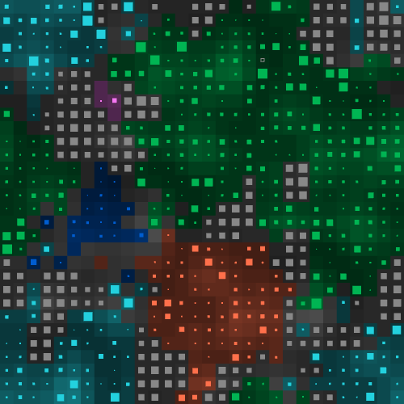
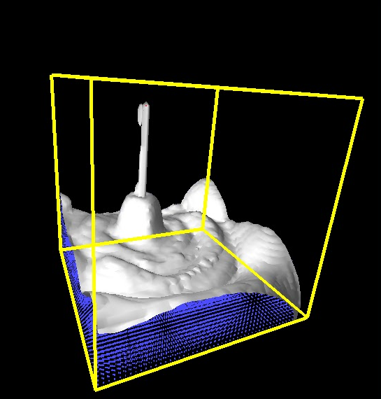
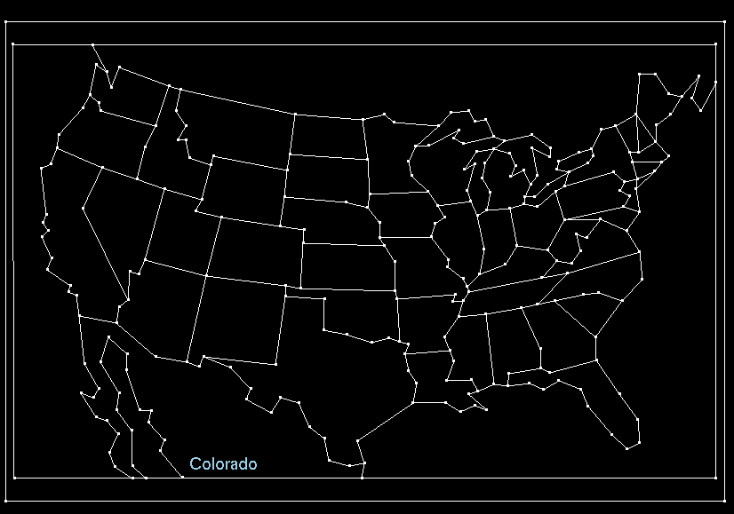
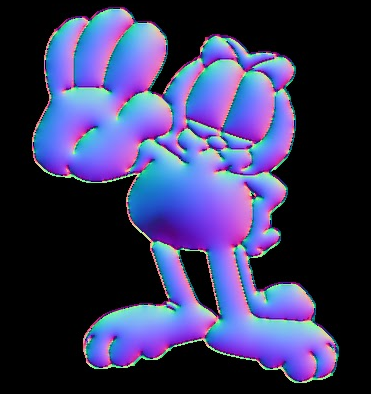

Halite is an AI programming game where players build smart bots that
compete for territory with each other on a 2D grid.
Find me on the leader board.
References:

In this project, I implemented a physics-based system to simulate liquids dynamics. Download
the report paper here. Check out the video.
Point Location Query

Implemented a solution to the point location
query problem using trapezoidal decomposition. The planar graph is stored in a data
structure modified from a doubly connected edge list.
LUMO

Lumo is a system that adds shading to cartoon characters. This project implemented a system that
automatically generates normal maps given a silhouette image.